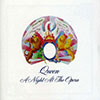
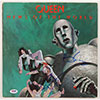
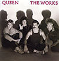
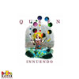

QUEENQueen ist eine 1970 gegründete britische Rockband. Ihre Besetzung mit Freddie Mercury, Brian May, Roger Taylor und John Deacon blieb zwei Jahrzehnte lang unverändert. Die Musik der Gruppe ist durch große stilistische Vielfalt gekennzeichnet, und alle Bandmitglieder waren wesentlich am Songwriting beteiligt. Zu Queens bekanntesten Songs zählen das von Freddie Mercury komponierte We Are the Champions, Brian Mays We Will Rock You, John Deacons Another One Bites the Dust und Roger Taylors Radio Ga Ga. Die Mercury-Komposition Bohemian Rhapsody belegte sowohl 1975 als auch 1991 viele Wochen lang die Spitze der britischen Singlecharts. Für diesen Titel, der Ballade und operettenhaft überzeichnete Gesangskapriolen sowie Hardrock in einem Song vereint, produzierte die Band eines der frühesten und stilprägenden Musikvideos. Queen war kontinuierlich international erfolgreich: Sämtliche nach ihrem Durchbruch im Jahr 1974 veröffentlichten Studioalben erreichten Platz eins der Charts. Mit rund 200 Millionen verkauften Alben ist Queen eine der weltweit kommerziell erfolgreichsten Bands. In ihrer Heimat Großbritannien wurde allein ihr erstes Greatest-Hits-Album mehr als fünf Millionen Mal verkauft, was dort bislang unübertroffen ist. Mit mehr als 31 Millionen verkauften Exemplaren zählt es auch zu den weltweit meistverkauften Alben. Mit einem Verkauf von über sieben Millionen Einheiten ist Another One Bites the Dust die meistverkaufte Single der Band. Queen spielte in 16 Jahren mehr als 700 Konzerte. |
Mitglieder
|
|  | 1975 |
|
|  | 1977 |
|
|  | 1984 |
|
|  | 1991 |